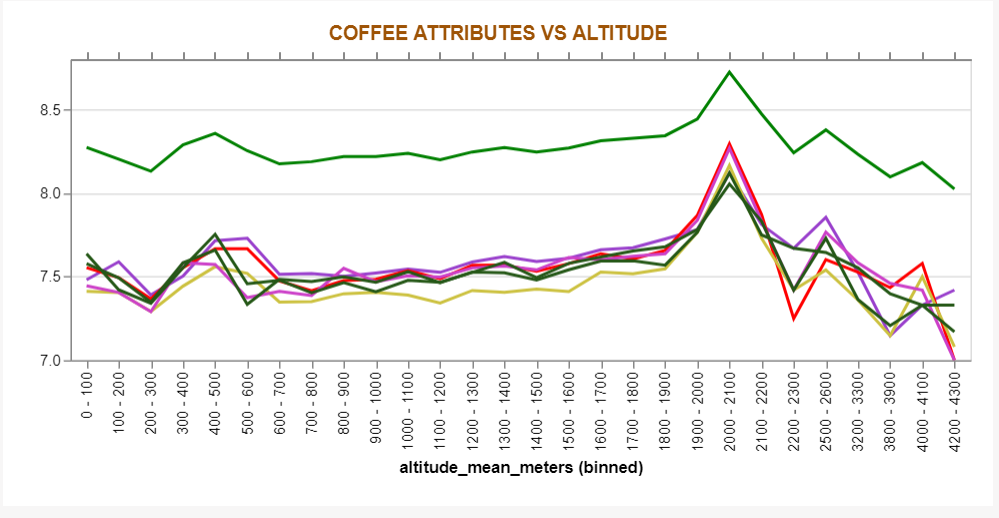
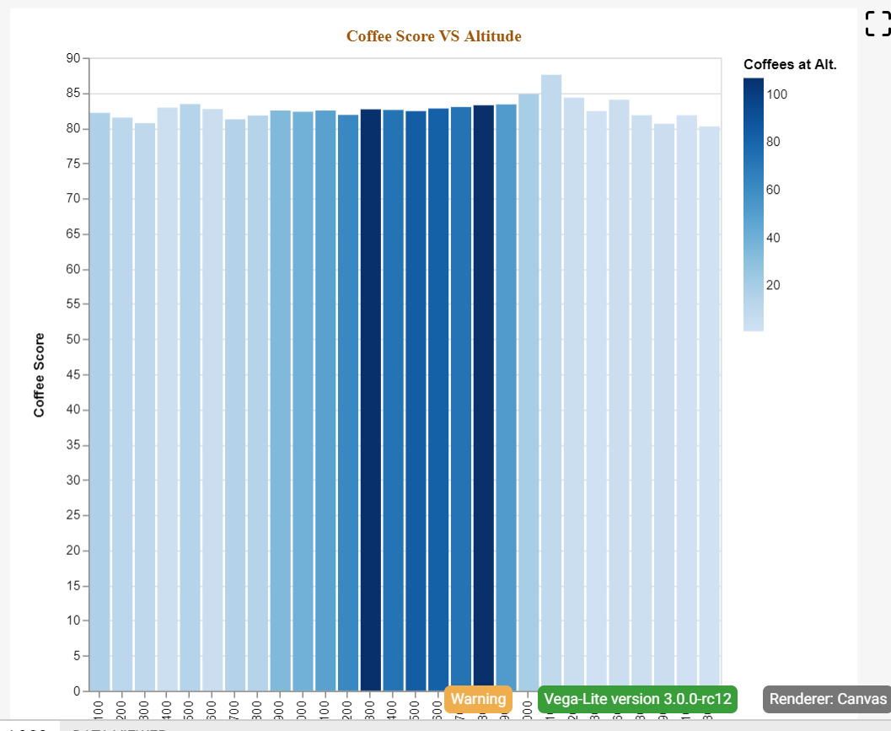
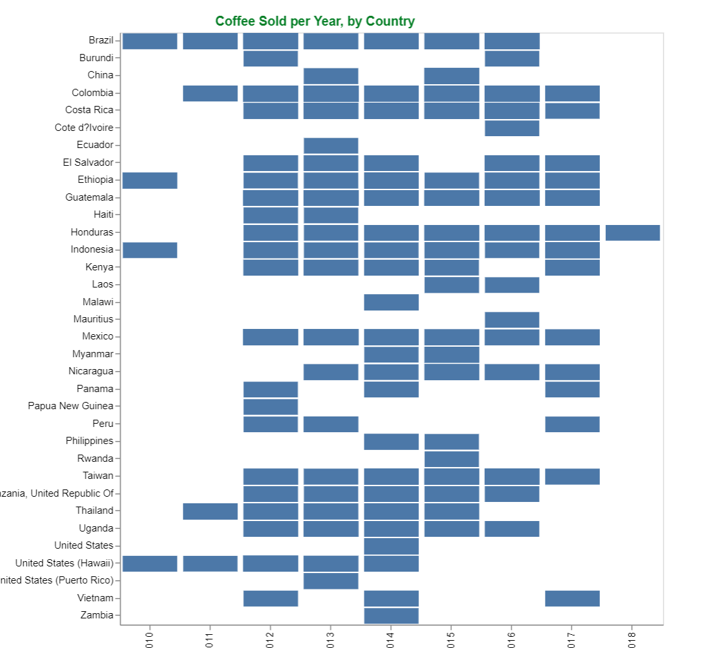
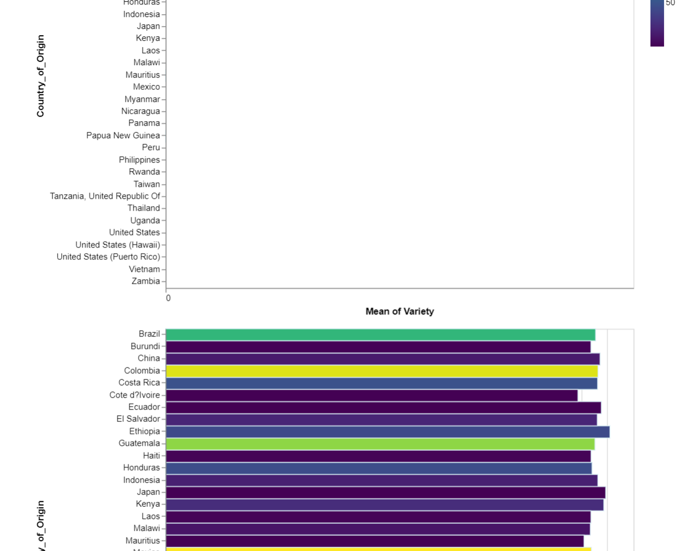
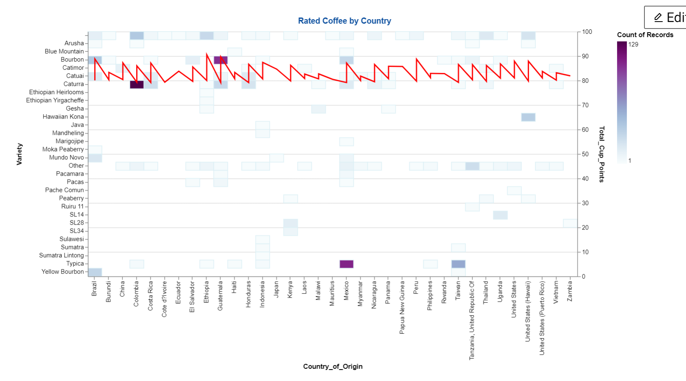
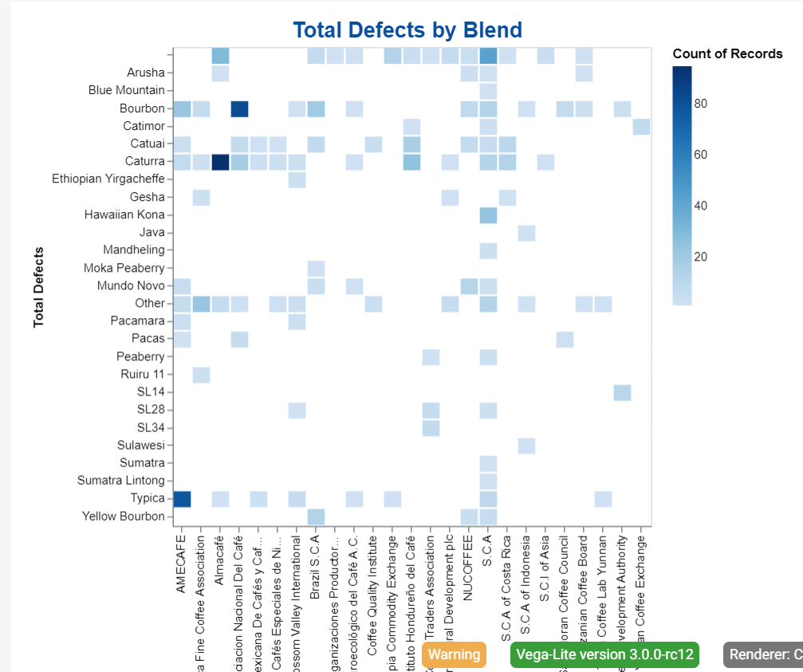

Patrick Lowe * Arabica Coffee

Q1. Attempt 1. Each line is an attribute of the coffee. The green line on the
top is the overall rating of the coffee. All attributes appear to follow the same direction as
eachother, except for when the graph hits its peak at an altitude of 2,000M. I felt this was a lot
of overlapping information regarding a similair category and so decided to redesign the graph.

With this attempt I used just the overall average rating VS the average altitude, with a heatmap of
the count of records at that rating and altitude. There didn't appear to be any distinct changes so I scaled the graph
down to 80-88 overall rating. This highlighted the differences more distinctly.

This was the first failed attempt at this graph. It had the year of harvest on the X axis with the
country on the Y axis. There was little information shown on how much was sold, rather it showed if if a country made
any coffee sales that year.

This graph was mid-design of Q3. It was plotting variety versus country. I was not loading the data in
correctly so it would not load the way I had intended. If I had stuck with this design, the information that would be presented
would not be enough to answer the question. It was getting variety by the country, I had later decided to do variety VS defects.

In this attempt I had tried to show the coffee variety, the country it came from, the count of defects, plus the overall
rating of coffe from that region. Unfortunately the line for average rating was not as clear as I had hoped, and the count of defects was
too varying to receive a legible heatmap. Toying with other colours didn't really help this as the extreme became too intense, drawing attention
away from the much paler data markers, or vice versa.

This last image is more of a supplement for Question 3. It shows the variety/blend and from which farm it is most popular on.
It should help the user understand if the defects are coming from the farm, or the variety as a variety with a high defect count coming from a
farm with a low defect farm could mean it is down to the variety (maybe insects prefer this blend, perhaps the conditions it is grown in affect it, etc).
Whereas a variety with low defects coming from a Farm with high defect count could suggest that the farm is mishandling the beans in general.